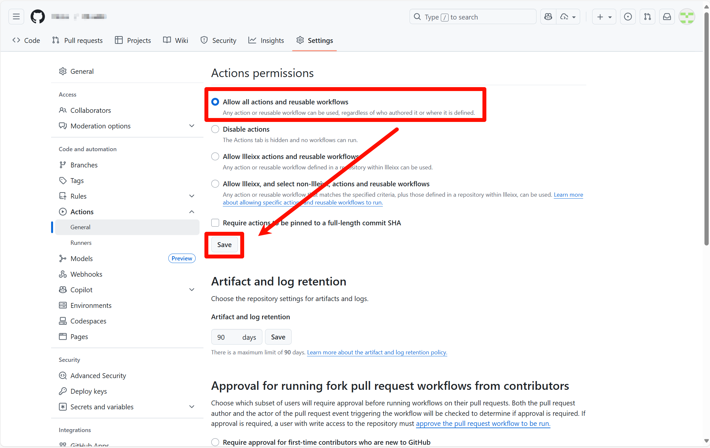

这是一个借助于 GitHub Action 实现自动生成算法模板的项目！
具体生成结果可以参考本项目的 Releases以及该项目的 Releases。
你只需要的是：
fork 本项目，并在以下界面确保开启 GitHub Action；

将你的的项目 Clone 到本地；
templates 目录下构建你自己的算法模板结构；config.yml；运行项目根目录下的 gen.sh 或 gen.ps1 来生成模板目录的配置文件：
例如：./gen.sh -r ./templates 或者 .\gen.ps1 -r .\templates，其中 -r 代表递归生成，./templates 指定需要生成配置文件的目录
注意 gen.sh 适用于 Linux, macOS 以及其他基于 Unix 的操作系统（需要 Bash 版本 4.x 及以上），同时也适用于 Windows 平台下的 Git Bash
而 gen.ps1 适用于 Windows 平台（需要 Powershell，但可能因为安全策略，你需要允许外部脚本运行）
根据你期望的章节顺序或者章节名称对各个目录下的 config.yml 进行微调；
push 到 GitHub。（如果你不想 fork，你也可以使用 GitHub template repository 来创建你的项目，点击该项目右上角的 Use this template，坏处是这样会难以跟踪本项目的修改。）
当以上准备完毕，你就可以通过以下步骤来自动构建你的模板文件：
# 给当前分支打 tag，tag 需要以 v 开头
git tag v1.0
# 推送 tag 到 GitHub
git push origin tag v1.0
此时就会触发 GitHub Action 构建你的模板文件！
在 Actions 页面会出现日志信息，当正确运行完毕，你就可以在项目的 Releases 页面发现你构建的 PDF 文件。
配置文件有两种，一种是项目根目录下的 config.yml，一种是算法模板目录下的 config.yml。
config.yml用于定义项目的元信息。
| 配置项 | 类型 | 描述 |
|---|---|---|
root-directory |
String | 指定算法模板目录 |
latex-pre |
String | 指定生成的 tex 文件的头部文件 |
latex-post |
String | 指定生成的 tex 文件的尾部文件 |
title |
String | 指定生成的 tex 文件的 title |
author |
String | 指定生成的 tex 文件的 author |
示例如下：
root-directory: templates
latex-pre: latex-pre.tex
latex-post: latex-post.tex
title: UESTC Nanana Templates
author: UESTC_Nanana
config.yml| 配置项 | 类型 | 描述 |
|---|---|---|
contents |
List | 声明当前目录的组成结构 |
对于 contents List 的 Item 有两类：
一类是 directory 类型，该 Item 定义如下：
| 配置项 | 类型 | 描述 |
|---|---|---|
name |
String | 声明子目录显示名称 |
directory |
String | 指定子目录 |
一类是 code 类型，该 Item 定义如下：
| 配置项 | 类型 | 描述 |
|---|---|---|
name |
String | 声明该 code 名称 |
codes |
String or List | 指定代码文件或文件列表 |
code-pre |
String | 在代码之前的说明性文字 |
code-post |
String | 在代码之后的说明性文字 |
示例如下：
contents:
- name: 流
directory: 流
- name: 最近公共祖先
codes: lca.cpp
code-pre: lca-pre.tex
code-post: lca-post.tex
- name: 树状数组
codes: fenwick-tree.cpp
- name: 快排
codes:
- qsort.cpp
- qsort.py
- qsort.java
# 如果未配置 codes，就代表只会生成对应的文本
- name: 排列组合
code-pre: 排列组合-pre.tex
-r 选项可以启用递归模式。
对于指定的目录而言：
对于子目录，生成对应子章节，如果启用递归模式，就会递归下去。
对于 x.cpp/java/py，x-pre.tex 和 x-post.tex 文件，会自动组装成一项到配置文件中，这三者可以自由搭配组合。
UTF-8 编码；/ 作为路径分隔符，不要使用 \；\section、\subsection 和 \subsubsection 作为章节标号，所以嵌套目录不能过多。请以本项目中的 maxFlow.cpp 作为最大目录嵌套深度；如果你有使用 code-pre 和 code-post 的需求，请确保你会使用 LaTeX 的基本语法，否则可能不会出现你预期效果：比如注意对 LaTeX 中的特殊字符（# $ % & { } _ ^ ~ \ ）进行转义，使用 \begin{enumerate} ... \end{enumerate} 表示有序列表，使用 \begin{itemize} ... \end{itemize} 表示无序列表等。
同时如果你有在 code-pre 和 code-post 中使用小标题的需求，请使用 \subsubsection*{title}，具体你可以参考本项目中的 排列组合-pre.tex。
我不会 LaTeX，但我也想丢一些文本内容到模板里面，我该怎么做？
我使用了 GitHub template repository 来创建项目，但我也想同步源项目（尽管我认为，后续本项目并不会有太大更改），怎么办？
./.github/workflows/template-sync.yml 下取消注释Allow GitHub Actions to create and approve pull requests 并 Save你可以通过更改 latex-pre.tex 和 latex-post.tex 达成效果。
同时，本项目提供更加紧凑的格式，在项目根目录的 config.yml 中修改 latex-pre 字段为 latex-compact-pre.tex 即可。
你可以通过更改修改 script.sh 文件修改下载的字体，并在 latex-pre.tex 中指定字体。
目前所使用的英文字体为 Inconsolata LGC Nerd Font Mono，位于 inconsolata-nerd-font 包中；所使用的中文字体为 Source Han Sans HW SC，Regular 和 Bold。
pip install -r requirements.txt确保拥有相关字体
字体信息在上一节有提到，确保 LaTeX 有安装 inconsolata-nerd-font 包，并且在本地电脑上为所有用户安装 Source Han Sans HW SC 字体
生成配置文件：./gen.sh -r ./templates 或 .\gen.ps1 -r .\templates
python main.pylatexmk -xelatex output.tex